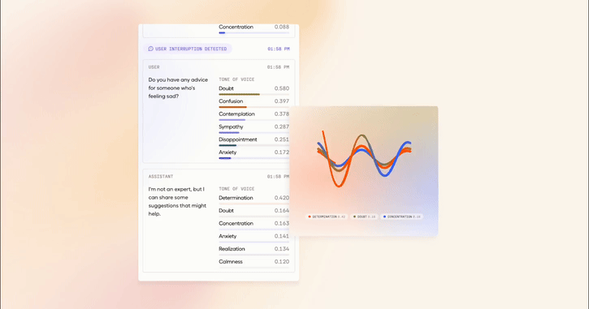
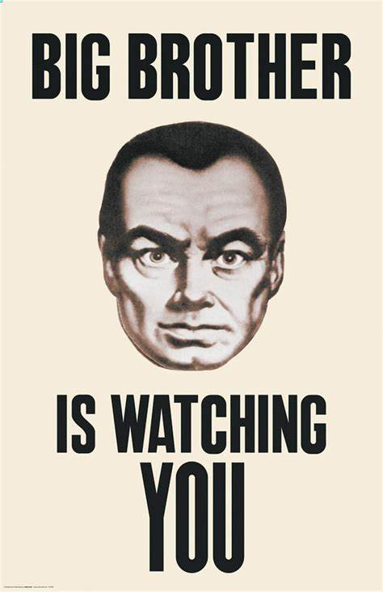

This AI is happy and knows when you are too
Whoever cracks AI communication is going to be very very rich. And I don’t just mean being able to type a message into an LLM and get a good output. I mean all of the subtleties of human communication that are difficult to explain and even more difficult to train. I’m talking about that “it” factor, charisma, rizz. Well this newest AI breakthrough called Hume is claiming to have taken a bite out of this problem.
“Hume’s EVI is an API powered by our empathic large language model (eLLM), which understands and emulates tones of voice, word emphasis and more to optimize human-AI interaction.” - Hume’s Website

Emotionally smarter than you
Warning: The first couple seconds of talking with Hume may be shocking. We’ve never seen an AI system that models human speech patterns so accurately and understands human emotion on such a deep level. Hume is trained on video of people in conversation expressing various emotions and has been fine-tuned for emotional language. It understands minute facial gestures and how they correspond with your emotional state as well as vocal inflections that can carry different connotations within the same sentence. This is the true essence of communication as an exchange of signals. The actual words we say do only some of the work in our colloquial conversations. We also rely on non-verbal cues, body language, tempo, rhythm, tonality, expressions, and on and on. Hume has stated the goal of building AI that models all modalities of human expression. What this means is from a bird’s eye view is AI that will eventually be able to express itself as well as we do. While that technology is no doubt far away, you can already see the importance that AI systems being able to express themselves will have.
One of the most popular apps in the app store right now is Character AI. Sitting at #41 across all apps in entertainment Character AI is one of the most widely used AI platforms in the world. The app allows you to create and chat with mini-fined conversational “characters.” These characters each have their own unique personality and are often times insightful and hilarious. In half an hour I argued with Julius Caesar about the merits of democracy, got called names by Nietzche, and asked a group chat full of famous historical figures about the meaning of life. It was a fun, insightful and hilarious experience and taught me one important lesson: AI systems that are better able to form personal connections with humans are so much better. In fact for consumer purposes I think this will be one of the most important factors in the AI arms race. People will prefer models that they like to models that may perform slightly better on some general accuracy measurement. Empathetic AI is not just a fun side-task. It will be an essential feature of the future of AI that shouldn’t be overlooked.

Empathetic AI
I generally hate the word “empathetic.” I shouldn’t say that, I’m not anti-caring about people. I hate the way the word “empathy” gets used by people who are just trying to further their own goals. Empathy is a catch-all term that encompasses all human ability to understand the feelings of others, however it’s more often used to moralize and paint one side of an argument as virtuous and beyond reproach. Labeling a view empathetic is not an empirically substantive argument, almost everybody argues from a place of empathy and more often differences arrive from a difference in experience rather than values. That’s why I a product being labeled as “Empathetic” AI gives me pause. Don’t get me wrong I see the potential for this technology:
- Therapy: AI systems could understand and diagnose patients more precisely than psychologists for free and with less stigma.
- Education: AI can improve the quality of education by providing a more personal student-teacher connection for free and with more flexibility.
- Content Moderation: AI systems will be better at detecting emotions and thus hate speech, bullying, etc.
But I don’t think these use cases paint the full story for what this breakthrough means. On top of the good use cases “empathetic” AI creates, there are also bad use cases:
- Better Fishing Campaigns: AI will be able to understand and manipulate human emotion dynamically and at a higher level.
- More Persuasive DeepFakes: AI will resemble human emotionality and be able to reproduce misleading content with more realism.
- Death of Emotional Privacy: AI systems will now be able to track how you feel in response to a certain stimulus, information we may not want in the hands of advertisers, companies, or the government

One of the first things I asked Hume to do was curse, it turns out the thing is PR trained. However, how easy it will be to jailbreak this thing or strip off the safety features of the open-source version remains to be seen. Whatever the case, this technology will continue to progress until it gets regulated. It’s likely that in the future we’ll have more companies claiming to have built emotionally intelligent AI, the frontier models will improve with great specificity and accuracy in modeling human emotion, and the technology will move to new frontiers of discovery i.e. different modalities of human communication. Ahhh yes, yet another thing to keep us up at night in a mixture of nervous fretting and hopeful excitement.